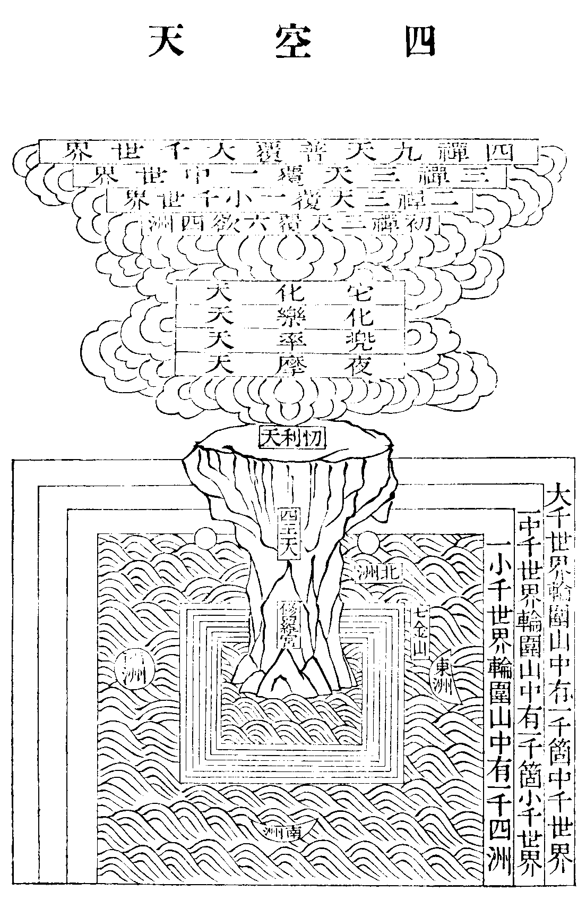

鬱
(於物切)。
華嚴懸談會玄記卷第十二
鈔又出現品下下疏云藥王遍益喻喻恩德種種利生故然法喻皆說六根清淨不唯局見聞也今但證於見聞故但引見聞經文等餘文也具云若有齅者鼻得清淨若有甞者舌得清淨若有觸者身得清淨若有眾生取彼地土亦能為作除病利益合中具云若有得齅如來戒香鼻得清淨若有得甞如來法味舌得清淨具廣長舌解語言法若有得觸如來光者身得清淨究竟獲得無上法身若於如來生憶念者則得念佛三昧清淨若有眾生供養如來所經土地及塔廟者亦具善根滅除一切諸煩惱患得賢聖樂佛子我今告汝(云云)。
▲鈔又云佛子下疏云如來祕密藏經明罵藥服之得力罵沉燒已還香(沉香彼經云赤栴檀今義引耳又彼經又舉罵燈燒之亦能除暗)罵佛亦勝敬諸外道若爾豈無罵罪耶罵罪非無今語遠益故法華中跋陀婆羅(此云賢護)等罵不輕千劫墮於阿鼻地獄受大苦惱畢是罪已還受不輕菩薩教化謗尚遠益況深信解行證悟耶弘持之者勉思此文。
▲鈔上雖明下應有問言如上引經是見聞佛益將此證上見聞法益佛法既異為證不成故答此也上雖說見聞佛之益乃是華嚴中所說無礙法界身雲即教理行果四法中果法也以經為門故如謗常不輕菩薩却名謗法華經例此可知(因不輕記四眾修菩薩行即四法中行法也)。
▲鈔舌根甞法味故者有二意一云亦答前難也以連前有二故自為二所以答前難也此意謗佛時舌根甞法味故雖謗佛亦成聞法益也二云別通一難也謂有難云既有毀謗云何成益故此答也意云口道佛名方起謗故生公云佛名起自聞謗之日(即涅槃經意彼云菩薩今隨義宗改為佛名也意云後時成佛得佛之名由今日謗時稱佛名而起也)。
鈔賢首品下證聞法益也下疏云佛出懸遠(金剛刊定記云如釋迦彌勒中間相去一千一百萬餘年也)已難可遇唯初成頓說故希有也奇謂初能具後(根本法中一代枝末教也)特謂逈出諸乘此句讚也下文勸也聞謂遇經忍可謂信因(百鈔云忍可者所謂勝解謂於諸理事審决印持故是信因)信則心淨受謂領文領義讚乃通言通筆說唯約言上皆所作總說皆難今意若聞已甚難即顯聞已其益深矣。
▲鈔兜率偈讚品者亦證聞法益也下疏云初偈反顯次偈順明由聞實法能成行法後偈由聞理智成於果法。
▲鈔獲於十眼者經說得三昧名無礙眼義含十眼如前教迹中引今但約義言之言善財童子者問准旨歸善財在造修中今何在頓得內答旨歸約對權故在造修今約一生頓能圓滿故在頓得又賢首以善財為解行生故在造修清涼以善財兼證入故在頓得或可所望別故望寄位修行在造修中望一生圓滿在頓得內。
▲鈔如隨好下以等法界三業者疏云由昔起過既徧諸境今悔昔非故運三業等眾生界一一佛前及眾生前發露懺悔夫懺悔者須識逆順十心(此依天台止觀第三中意)順生死十心者一妄計我人起於身見二內具煩惱外遇惡友勸惑我心隆盛三內外既具滅善心事不喜他善四縱恣三業無惡不造五事雖不廣惡心遍布猶如獵者萬般禽獸總帶殺心慳貪之者舉世資財無一不要事未必遂惡心遍布六惡心相續晝夜不斷七覆諱過失不欲人知八虜扈(不慚不順之貌)抵突不畏惡道九無慚無愧不懼凡聖十撥無因果作一闡提次起十種逆生死心從後翻破前十一明信因果終無自作他人受果二深自尅責天見我屏處罪人見我顯處罪生慚愧心三怖畏惡道人命無常一息不追千載長往豈可安然坐待酸痛四不覆瑕玭(玉內有病為瑕玉外有病為玭)五斷相續心已能吐之云何却噉六發菩提心七修功備過翻昔三業造罪不計晝夜八隨喜他善九念十方佛翻昔親狎惡友信受其言十觀罪性空。
▲鈔結云若如是知下罪性非有從顛倒生無所從來亦無住處非無如幻如影招妄果報而不差失離斷常故深達罪福相也故涅槃經中阿闍世王云若我知是法畢竟不造罪故圭山云雖悟理而不息業云欲懺悔竟何益歟。
▲鈔又諸下是前所說地獄天子所持供具言而成大益者聞香得九地見蓋得十地故也言其身安樂者由脫障故得解脫樂故喻四禪無八災患(初禪出憂二禪出苦三禪出喜第四禪出樂二禪已上無尋及伺第四禪無出入息也)言若有聞者下合由滅障故得淨善根是為益相彼諸下所滅八萬四千如前已辨言了知等者能滅謂惑本虗居然不生。
鈔出現品云下疏云明因果交徹此中若是事成云何同一性若是理成云何成正覺入涅槃耶此是華嚴大節圓宗之義不對諸宗難以取解然諸眾生若於人天位中觀之具足人法二我小乘唯是五蘊實法大乘或說但心所現或說幻有即空人法俱遣或說唯如來藏具恒沙性德故眾生即在纏法身法身眾生義一名異猶據理說更有說言相本自盡性本自現不可說言即佛不即佛等若依此宗舊來成竟亦涅槃竟(理不礙事八相成故事不礙理皆同一性又理不礙事一成一切成事不礙理都無所成以理融事故一成一切成答前若是事成若是理成雙關之難也)若爾何以現有眾生非即佛耶答若就眾生位看尚不可見唯心即空安見圓教中事如迷東謂西正執西故若諸情頓破則法界圓現無不已成猶彼悟人西處全東若爾諸佛何以更化眾生不如是知所以須化此名究竟化(廣鈔第十二云一約理觀他是佛約情觀己是凡已成恭敬之行二約情計觀他是凡愚苦身約悟解知我同佛智可謂能救以成大悲之行三俱約事相觀佛勝以增自利之行觀眾生劣以增利他之行四俱約性以成無我平等究竟解行自利利他依此方為究竟)隨門不同種種有異約成佛門一切成也言皆同一性者同一無性故得現成妄性本虗生元是佛真性叵得非今始成。
鈔所望處別者前望滅障處為滅障益今約地獄天子得益竟展轉得益為轉利益言第三重者下問前教迹此是第二重得十地今何云第三重答若三重得十地聞香但得九地故攝屬初重轉益見蓋得十地故為第二重今約轉利益則聞香滅障已當第二重見蓋遇光合為一重故為第三重也問聞香見蓋理合第二重遇光却是見蓋之轉益當第三重今何云爾答理實應爾今以聞香唯得九地見蓋及遇光同得十地約其益相同故合為一重也或可第三重字文雖在初意目遇光為第三重舉其能益顯轉益爾則見蓋者望前第一重為轉益望第三重為能益也故鈔云上下影顯思之。
鈔會釋經文等者以今疏會釋發心品中文也所以會釋者以法慧說十住等時既有此十因(此因通於因緣二也)會今釋說大部經必有所由今開於因緣各有十義不同彼因緣相叅若以疏文對會彼十因則因緣易知也世尊本願力故即酬宿因也由願起行行含願中次句欲說佛法利今後故次句以智慧光普照解了一切佛法方能行勝行故次句開闡性習二性生菩提故為真實義是因性故次句證得法界之性法爾常徧說故次句知眾生根順其機感說法令喜故又示眾生真俗性相名為真法以令解了悉歡喜故次句由離障故入佛法位至因圓故并次句是果滿皆名地位故又既已果滿果德具足故次句契證了達甚深法界為諸教本末句說如是法明是說因此上皆取下疏鈔意說之(上約寂照具配十因)若會解意第二句全同下八句但皆是因然文不全同不必配今九因若配非今鈔意今既以下疏鈔意配釋配亦無妨。
▲鈔十因舉二下問神力即緣中加者何名因耶答因緣望所起果俱得名因於能起中親疎之異名因名緣。
疏說時方人等者時方人各各不一故致等言此即內等名等非外等名等。
鈔信聞二種等者如是者信成就也智論云佛法大海信為能入智為能度信者言是事如是不信者言是事不如是故肇公云如是者信順之詞我聞者聞成就也我即阿難五蘊假者聞謂耳根發識親自聽聞言在佛滅後者以佛臨涅槃時阿難請問四事佛一一答之此問一切經首當安何等佛言當安如是我聞等六成就也此二成就雖佛敕令安然在結集時方安此言故非起經之緣。
疏一依時者十緣皆言依者教依此十為緣方得起故又此疎緣要依親因方始有力能起果故具斯二義故皆云依。
疏夫心冥至道者心謂真智至道即至極之道體目真如道是遊履義以是根本智所遊履故又是出生義以智冥理出生萬德故此文通後三教之義終教則始覺契於本覺頓教則絕待智契絕待如圓教即無障礙智契無障礙理言渾一古今者渾者融也一者周易云一陰一陽之謂道彼疏釋云一謂無也今意真智契理渾融無古今也。
鈔拂迹顯實者拂可得迹顯真實理故。
▲鈔故肇公云者即涅槃無名論注云古今通體始終同源窮本極末未曾有二同一真體。
▲鈔生公下即法華見寶塔中意釋二尊並坐之文也彼云多寶在塔全身不散表本覺不動智釋迦從外同入坐者表始覺智而契本覺古亦今也多寶即釋迦今亦古也釋迦即多寶彼表始本非一非異今但取無定古今之時也。
▲鈔無生即無三世者汎論三世即有五種一剎那三世(前剎那為過去後剎那為未來中剎那為現在)二長時三世(如有情未生已前初生至死身謝已後為三世也)三神通三世(謂現在識能緣過去未來事故假立三世)四唯識三世(謂觀現在業行比知當來之果報名為未來觀現在苦樂等報凡知過去之因便於識上變起)五道理三世者(謂隨一種子上以道理故說三世謂隨前念後念引起道理為三世也)今於五中五種皆無而偏云剎那安有時分者細者尚無況其麤耶。
▲鈔出現品等者總引三文證於二義初出現品證約法顯實意云真如所證之法既無生滅豈有三世之時。
鈔下經偈云下二段證約人顯實此寶幢偈正如鈔引言略舉人證者疏中缺約法證故言寶幢者下疏云以圓淨智照平等理不礙應現隨順一切如摩尼寶故眾生如是下二句牒妄情如來下二句佛非世法故不繫日。
▲鈔法界品云者應義引即七十三經大願精進力救護一切眾生夜神所說文也善財問發心久如夜神答之經正云善男子菩薩智輪遠離一切分別境界不可以生死中長短染淨廣狹多少如是劫數分別顯示何以故菩薩智輪本性清淨遠離一切分別網超越一切障礙山隨所應化而普照故(今鈔引文前却又多數字致前三句宛似偈文以經對鈔可知)次喻之云譬如日輪無有晝夜但出時名晝沒時名夜菩薩智輪亦復如是無有分別亦無三世但隨心現教化眾生言其止住前劫後劫然他宗以今成為近迹昔成為遠本乃廣辨本迹以本獨為勝不知久近對論皆是跡爾如法華中彌勒與大眾皆疑佛成道方四十年是菩薩執近迹而不知此理故佛以久成以斷彼疑是隨機對說今此經佛與菩薩約人約法皆以契實即無古今隨機即有古有今久近雖殊然皆是迹故今並拂以顯實也。
鈔就德顯圓者前拂迹顯實尚通實頓二教彼亦離時故況圓教具德圓融耶無涯徹於三際事也稱性常恒理也一念即攝一切劫理能融事理事無礙念劫圓融事事無礙四義渾然故德圓妙不爾何名就德顯圓耶。
鈔自受法樂等者十地論說即所得智慧寂靜樂也何故顯己法樂為令眾生於如來所增長愛敬心故復捨如是妙樂悲慜眾生為說法故。
▲鈔旨歸但云等者彼正云四攝同類五收異類六念攝劫七復重收八異界時九彼相攝十本收末(今鈔即全依疏書之者非也若爾如何結云今加一字耶)。
▲鈔如今娑婆下問初唯一念二盡七日皆徧一切今何云上七重且約娑婆耶答今就此界聞說以為其首則起處之時在此而徧無盡故言今辨樹形下問時無別體依處等立次說處中異類界後明剎種等今何不爾答異類之言已攝剎種等又時中初唯一念處中應明一塵如教迹中一塵遍五類法界等十以非劫為劫應次明非處為處等皆義無方影顯示故應審思擇。
▲鈔剎既同處等者剎該同類異類也既同類剎異類剎同是處所而有同類異類形相不同故同類剎異類剎中時亦同是時分不妨同類異類界時各別分齊非謂同處之言定是娑婆界中之異類界為同處也其異類剎有二師義一云唯一同類界外異類若助正云其異類界之言有在娑婆等同類剎中有在同類界外各別安布故下依處。
▲鈔中云向明異類且舉百億中異類既云且舉不必定爾此中異類界時通於二義有在同類界內有在同類界外後依處鈔中第三唯明同類界中異類第四徧剎種方該同類界外之異類也欲顯前狹後寬故此中通二義者無後相對故然有十異至後當會。
鈔九彼此相入下二義釋之即彼下標初義若念若劫下釋初義(此段兩用今用什初)且如樹形世界中同類劫相攝四異類劫相攝五以念攝劫六念劫重收七重重無盡同前娑婆一類界中四五六七樹形既爾江河形等准知言或同異類界時下標第二義若念若劫等復更釋之謂前七娑婆同類界時與第八異類界時彼此各有攝入之義以同類界中長劫攝異界長劫短劫攝短劫彼攝於此亦然(同前第四)同類界中長劫攝異類界中短劫短劫攝長劫互入亦然(同五)以同類界中念攝異類界中劫以異類界中念攝同類界中劫(同六)又以所攝劫中各分為念亦各攝劫等重重無盡(同七)鈔以非劫為本者以時劫稱性離分限而常契理故云本也劫即為末者以劫波此云時分說彼差別此即事也為末今以本收末故令末中一切時分皆如理融攝故得一一攝一切時也此則由第十義故方得前九隨義融攝皆自在也言離分限者出非劫所以也。
鈔如華藏下舉一例顯也以華藏品經云華藏世界海法界無差別故劫即非劫念即非念約不壞相不妨有劫念等華藏既爾例餘華藏之外十方無間剎海所有時分亦然言以時無長短等者釋成非劫為劫所以也初句釋成非劫而言以染時分者釋成為劫也以染形彼淨故謂華藏無三灾成壞等故以染界擬之而說劫數耳有本鈔云以離(非染字也)時分說彼劫故者(不必作形染什)乃躡上非劫而結成為劫也言以時無別體下復通釋非劫為劫劫即非劫義也時既法上假立別無自體今法既融通能依之時亦融也所以得云非劫為劫劫即非劫爾。
▲鈔離世間品下疏云即無等智由照徹故不偏住著雙住理事名無與等經說十種此當第六故。
鈔又此一部下釋前重通再難也謂前難云略本至少安窮無盡耶故此答云又此一部等此即與前如觀牖隙見無際空等義意無別上依助正若寂照即於前法爾意外更有此意謂此一部即無邊結通無盡勿濫前義不爾既已如前法爾何云又耶今詳二解前釋近宗前法爾中通二重難今疏唯舉初重鈔云又者通第二重也。
鈔難云等者等字等七七八七并五十箇七日也下疏云法華過三七日方說小(經云我始坐道場觀樹亦經行於三七日中思惟如是事)四分律中說六七日方說法興起行經七七日方說五分律八七日智論五十箇七日有云與十二遊行經一年大同言四分六七日四分律云佛坐菩提樹下七日受法樂起已受二賈客麨蜜食已即於樹下趺坐七日遊解脫三昧起定由食麨蜜身內風動有樹神獻訶梨勒果食已風除復坐樹下入三昧起已至一鬱鞞羅村乞食婆羅門施食食已更詣一離婆那樹下七日思惟起已復至彼村婆羅門婦奉食食已復詣前樹下復七日不動起已還至彼村乞食時婆羅門男女奉食食已即詣文驎水龍王宮文驎樹下跏趺七日一思惟時天雨極寒龍出宮以身繞佛舉頭為蔭過七日已龍化作少年禮佛讚歎已佛起龍樹下便詣阿踰波尼拘律樹下坐而作是念我法甚深何器可受思惟默然時梵王等遙知即往禮請轉法輪等(上皆撮略彼文)。
▲言興起行經七七日者會解記云嘗讀此經即無此說後讀出耀方見此文出曜經第八云佛受二賈客食呪願已爾時世尊七七四十九日默然不說法內自思惟欲使前人自來請受時摩竭人民聞菩薩已成佛道晝夜懇惻追念如來(教章亦指興起行經似失檢對誤書經名爾)。
▲言五分八七日者然五分律與四分律雖引事不同皆是六七教章又指十誦律亦無此說如五分律第十四云佛敷草座已繫念道品三明洞然趺坐七日受解脫樂從三昧起受提謂波離二人麨蜜呪願已復至一樹下食食已復入三昧七日後起到文驎龍王所坐一樹下龍奉食食已復入定七日起已到鬱鞞斯那聚落入村乞食須闍陀女奉美食食已還菩提樹下三昧七日起定復至其舍姊妹四人奉施食食已還菩提樹下三昧七日復起向阿豫波羅尼拘類樹中路見一女人鑽酪作酥就乞食已復至樹下三昧七日過時已後從三昧起作是念我所得法甚深微妙難解難見非愚所及佛即默然梵王等遙知即請轉法輪方往鹿園度五人也(上亦撮略彼文)疏中答意云皆是說此經之時隨根見聞故各不同也。
疏廣如旨歸者彼更問云若爾何故佛有涅槃耶答本不涅槃法界品說開旃檀塔(鞞瑟胝羅參中意也)見三世佛無涅槃者既爾何現涅槃答涅槃亦是說法攝生與成道說法無別故。
鈔普賢三昧品等者疏云身相如虗空法性身而住法性土也假說能所而實無差云非國土。
▲鈔無能所依尚通實頓者會之泯之故分二教皆是拂迹故云通也況於下舉劣況勝也。
鈔剎塵即入即下通局交徹二四句者即此一界攝一切此一界入一切等第二種四句又一塵攝一切剎一塵遍入一切剎等四句即下疏云又以一塵例剎亦有四句義兼初一重四句初重四句無即入故第二重四句但例即入以塵例剎方有剎塵即入義故對下疏鈔可以詳審。
鈔不壞相故不妨立時者以牒不壞相言即是牒疏中不壞所依疏牒不壞所依之處故須云不妨立處今以前依時中意例依處故有本中是處字其義彰顯。
▲鈔然旨歸下會時處先後問旨歸中先依處後依時何以今先依時後依處故此答也意云旨歸以七處等先已有故佛出於世後方始說經今疏意欲順經初言一時後言住阿蘭若菩提場中等故問今順六成就者何不依時依主依處為次耶答今順六成就中先明說時便明說處者即以時處為一對依主是人依三昧依現相是法即人法為次却疎依主為第三也又以有所依之時處方有能依之人為次也問六成就中何以先時後處答言且便故。
疏摩竭者此云無毒害法華鈔云上古有王率領此國賦性仁慈有犯罪者不行殺戮輕者以寶贖之犯重罪者被駈出國不行毒害因此為名又云摩者遍也竭提聰慧也聰慧之人遍其國內言華藏者蓮華含子之處目之曰華藏今剎種及剎為大蓮華之所含藏故云華藏。
鈔娑婆者此云雜會雜惡眾生共會一處故又正曰索訶此云堪忍謂諸佛菩薩於一切雜惡眾生中行利樂時多諸怨嫉眾苦逼惱堪耐勞倦而忍受故如提婆達多數欲害佛等欲彰所化弊惡能化悲深常以警之故立斯名言欲界者下地貪著弊欲曾無厭足唯此為界故名欲界。
▲鈔華藏世界六種震動者諸會結通之中皆有此文故言其地堅固者廼世主妙嚴品第一卷初文也言娑婆廼是土石諸山者即法華經妙音菩薩品文也。
▲鈔亦如螺髻下即淨名經佛國品中意梵云尸棄此云寶頂或云寶髻亦名螺髻即初禪梵王也自在天宮即第六欲它化自在天宮也(為有勝天令它劣天變化五塵於中受樂顯己自在故以為名)肇公關中疏云舍利弗在人而見土石梵王居天見如天宮問螺髻是初禪梵王應例如色界何故如六天耶答有二意一云靈鷲等處正在欲界且指欲界最妙之處以為例耳二云以身在欲界佛會中若言如初禪天宮欲界人天不能了知為欲令欲界人天俱了知故且就欲界最勝為論問梵王見雖同欲天尚是穢土何以證淨義耶答雖非是淨但證前隨根所見不同之義且佛土真淨超絕三界豈真如天宮世淨而已哉(設有七珍穢眾生住故亦非淨土也)此蓋齊其所見而為言耳。
▲鈔華藏品下正引當經證也下疏鈔云喻眾生同處異見佛本無二金色銀色剎本是一見淨土穢土鈔即二四句下即第二重淨穢無礙四句中第三一句淨穢隱顯無礙勝劣二根同見故剎體自在故未能窮究四句融通玄妙之義故云近宗若爾前二義亦淨穢無礙初重四句中初師得初句第二師得第二句何以偏此近宗答雖各得一句前二師淨穢各異義局淺故後一師且知剎該淨穢稍深於彼故云近宗。
鈔前一四句以本剎末剎相望成四句下一節鈔文釋此四句作二種本末口科分二。
鈔華藏為本剎等者問華藏既含諸剎何言淨耶答成就品疏云就佛言之故無國而非淨也一切淨穢等土皆是如來通慧力成為物而取擬將普應。
▲鈔若寬狹相望自屬通局者此有二意若汎論寬狹則本剎通末剎局若以本剎唯淨末通染淨則本局末通雖有二意皆屬通局非此所論。
▲鈔故華藏品下疏云初句標名次句不壞分量即同真性次句具德莊嚴末句無礙安住今此中意初句望第二句證事末不礙理本第二句望後二句證理本不礙事末或可通證染淨本末華藏不壞分量應劣根故染證初句極清淨故淨證第二句不壞總分量故華藏不壞別分量故華藏內娑婆證第三句皆即同真性染淨相盡故證第四句既全不壞即同真性明知四句渾融無礙。
鈔不論本末染淨者不濫前四句故亦揀非也今正約下顯是也以前四句此娑婆對華藏故唯稱染今於娑婆再分故通染淨亦作二解初約剎體隱顯論二就機見勝劣說言俱約二人同見者謂勝機所見淨顯穢隱劣機所見穢顯淨隱同時無礙所以然者剎土體性自在故。
鈔前四句約一重等者不論相攝又約人望處說一在此界七處說二十方諸剎有佛與此齊說上二事也三即此一佛七處如月入百川不分而遍事事無礙也四以前三句歸理後四句攝入無礙前三句事事無礙第四句以前三句歸理平等。
鈔以麤例細者問疏云以塵例剎科中何言以麤例細答疏中先言所例後說能例科先舉能例後說所例前後雖異大意無差言引文如前者即依中現依等中引第六經偈云佛剎微塵數如是諸國土能令一念中一一塵中現若作四句者一或局此一塵攝一切國故二或通此一塵入一切剎故三俱即攝即入故四泯形奪相盡(平漫四句例知)。
鈔四遍塵道者即空中塵往來遊履之道雖舉所遊之道意取能遊之塵也旨歸云謂十方虗空界中一一塵處皆有彼剎悉於中現演說此經即取十方與裟婆同類中塵道也六該剎塵者旨歸云謂盡虗空界一一塵道各亦同前攝自同類無量剎海而於其中亦說此經八重攝剎者旨歸云謂於此華藏一一塵中皆攝無邊諸佛剎海皆於其中說此經法。
鈔以歸華藏等者旨歸云謂此等一切雜染世界各皆同盡唯是華藏世界海即此前鈔云事盡理顯染相盡故雖略無佛淨相之文義含在中今言旨歸文云下義引也今疏加第五遍華藏但取事相不約同真之義。
▲鈔此亦賢首下通妨問既破刊定不依賢首今何不取旨歸中義故此答也謂中間六義雖有取捨離合排次初二及後二與旨歸同中間六意亦是賢首八十卷經新修略疏中光明覺品疏意參詳用之耳。
鈔菩提樹者西域記云迦維羅衛國於前正覺山山西南十四五里有畢鉢羅樹昔佛在世高數百尺屢經殘伐猶高四五丈佛坐其下成等正覺因而謂之菩提樹焉言閻浮提者新云贍部俱舍云無熱惱池側有贍部林其形高大其果甘美提言洲也水中可居曰洲依此立名言七處皆爾者經既云一切閻浮提及十方須彌頂亦然即顯初會及第三會已遍法界餘則類此故云七處皆爾謂佛遍此界七處亦遍盡法界中之七處故疏云初此閻浮七處周法界起自此界七處故最狹而他界中但有七處俱為能遍法界為所遍此所遍法界最淺下說能遍所遍准此明之而能遍漸寬所遍漸深言文中但三賢下即須彌夜摩兜率三天也言義如下疏者須彌品疏云初二會相隣接故不假帶前赴後此三人天隔越故須連帶又此三會同詮賢位第六會已入證不假帶前七即位中普賢(又略策云及於妙覺)居然不假第八頓彰五位體用已融七八亦在普光與菩提場相隣人天隔越尚爾況相隣豈不融耶第九唯明證入體用一味故不假帶前赴後上皆明佛不起而遍。
鈔大海鐵圍者光明覺品疏云大海即七重金山外鹹海也(百抄云海濶三億二萬二千踰繕那量)一四天下一小鐵圍(周圍三十六億七百五十踰繕那量四邊面各五萬六千二百五十踰繕那量)四州者東云勝身勝餘洲故(形猶半月)西云牛貨以牛貨易故(此洲相圓)北云勝生壽定千歲衣食自然故(此洲相方)欲界六天(四王忉利夜摩兜率化樂它化)色界十八(初禪三天謂梵眾梵輔大梵二禪三天謂少光無量光極光三禪三天謂少靜無量靜遍靜四禪九天謂無雲福生廣果無想無煩無熱善現善見色究竟天)無色界四天(空無邊處識無邊處無所有處非想非非想處)言各有百億者已上數各百億故此依黃帝算法下等數法(彼有二等數法下等十十變之中等百百變之上等倍倍變之)十十變之從千已上依中等數法百百變之謂百小千方為一萬(若約小數十萬是一億謂十小千為萬百小千為億也則有)千箇小千為中千方是十萬(約小數百萬即十億則有)十箇中千始為百萬(小數千萬)方是一億(小數有億)既十中千為一億百中千為十億(小數千億)今有千箇中千故有百億耳(小數萬億)下鈔云若以小數計有萬億也。
鈔百億色究竟天者下鈔云初禪量等四天下二禪量等小千界三禪量等中千界四禪量等大千界是知三千世界中有百億初禪百萬二禪一千三禪唯一四禪問准此唯一色究竟天覆三千界何故亦言百億耶答且如二禪直語其量等千初禪以千初禪向上取之則有千二禪如是百億初禪向上取之則有百億四禪譬如夏雲普覆九州若以州取則有九雲若以郡取則有四百餘雲若以縣取千數未多或云一雲普覆或萬國或言萬國各有夏雲思之可見然此百億世界在華藏最中央剎種之中當第十三重今略圖示其相。
四空天

鈔三遍異類等剎者此一遍字即佛遍樹形等剎樹形等剎為能遍法界是所遍今且以娑婆望彼名異類若以一類樹形望娑婆等娑婆却為異類不爾何以娑婆獨名同類耶言結不可說不可說等者此中多一不可說字經正云有不可說佛剎微塵數此正是最中剎種所持。
鈔且舉百億中異類者此有二釋若寂照等云是最中一剎種中所有一類娑婆世界中異類之剎(謂如娑婆世界中同有百億世界不妨有形狀不同之異類剎也)今方總明剎種(此兼娑婆界外異類)此意同前助正有二異類若會解云且舉百億同剎種所持中異類非是百億界中自有異類也評曰今詳異類之言有其四類一小剎異類如百億界中自有異類也二大剎異類如一剎種中二十重剎相望有異類也三剎種異類十不可說佛剎微塵數剎種相望論異類也四剎海異類即十方無間盡法界之剎海相望論異類也故此下云異類之言雖通華藏等今此異類該前二異類也謂小剎及大剎百億中言含二意故若在內為中即小剎異類若同處為中即大剎異類前二釋皆取方為正義。
▲鈔然異類言雖通華藏下通難也問但言異類豈不通華藏耶答異類言總雖通華藏而意別唯取小剎大剎異類耳(此影剎種問答)。
鈔言遍剎種者下疏釋種義云積多世界共在一處攝諸流類故名為種問若爾前異類中已遍所攝多種世界今遍剎種將何所遍答下疏云雖依種類以立種名何妨此種別有其體如多蜂孔共成一窠豈妨此窠別有其體又云種亦名性(性是因義)依此種性能生世界如依一禾生多穀粒舊經云性多取此義恐濫體性故改為種今此最中之種即雙攬第二同類第三異類並是此中剎種所持若約與前寬狹異者第二唯同類三唯異類此中雙取為種若爾但雙攬前二云何次寬於前二耶答豈不前云此種別有體為前世界依起所以寬於前也。
華嚴懸談會玄記卷第十二